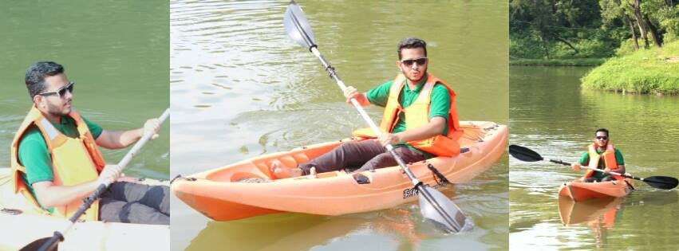
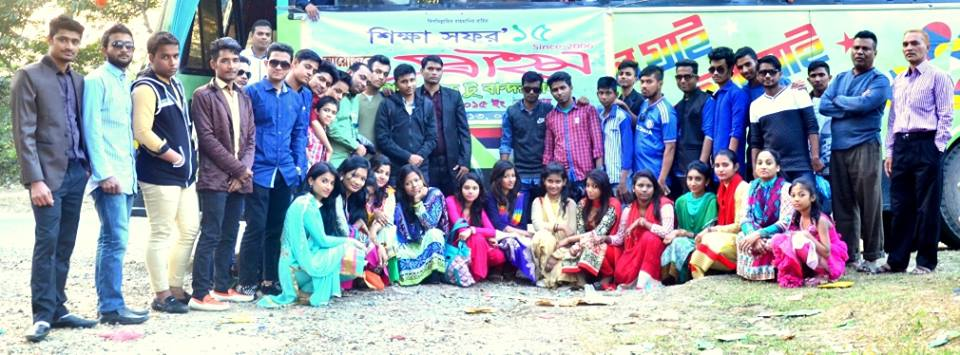

Teacher, Web developer and Graphics designer
Cooking has been a huge interest of mine. My mom's a great cook- especially in Asian cooking. I think I have got it from her. From my point of view, having learned how to cook, makes a person life much easier. Then last but not least I love praying. I pray as much as I can. Being a Muslim and not praying, just doesn't go together, so that is why I pray. I also feel that whenever I pray, it helps me getting forward and achieving more and more.
Teaching is My passion and it makes me happy as well.I have 4 years experience as good tutoring privates or batches.
Last updated 3 mins ago
Graphic design, also known as communication design, is the art and practice of planning and projecting ideas and experiences with visual and textual content. The form it takes can be physical or virtual and can include images, words, or graphics. The experience can take place in an instant or over a long period of time. The work can happen at any scale, from the design of a single postage stamp to a national postal signage system. It can be intended for a small number of people, such as a one-off or limited-edition book or exhibition design, or can be seen by millions, as with the interlinked digital and physical content of an international news organization. It can also be for any purpose, whether commercial, educational, cultural, or political BY IRFAN..
Last updated 3 mins ago
I’m a strong believer in preparing website content before initiating graphic design and this applies to both websites and blogs. Some will argue with me, but I’ll fight this battle and dig in because I know content before website design is the right approach. I believe: Strong website design extends past colors, fonts, and layout boxes. Strong design focuses on the user. Website design should be crafted around the user, their needs, and the desired outcome of a website visit. It should be ...
Last updated 3 mins ago